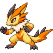

Tap a stage to read its story.
Sparkit stands on two legs with disproportionately large paws and a crown of spiky amber fur that perpetually looks windswept by a fire that isn't there. It is quick to stand its ground, planting those oversized feet wide and huffing hot breath whenever it feels challenged - which is often. Sparkit patrols the edges of the Lava Crater as though it has been personally assigned to guard it, turning back slower creatures from paths that lead to unstable ground. It can't yet read the crater's danger signs as well as it thinks it can, but its instincts are already sharper than its size suggests.
Field note: Sparkit plants its feet exactly at the safe boundary of every unstable lava shelf - geologists have verified it has never once been wrong.
Lava Crater. Sparkit and its family are found in the Lava Crater. See everyone who lives there.
Share a Bond Food that matches its types to become friends. Sparkit loves:
A Bond Food is not a trick. It joins your spirit with the Kimuro's spirit, and only when it chooses you.
Print the Kimuro adventure packs: mazes, cards, a board game and Bond Mark medals.
See the printable packs